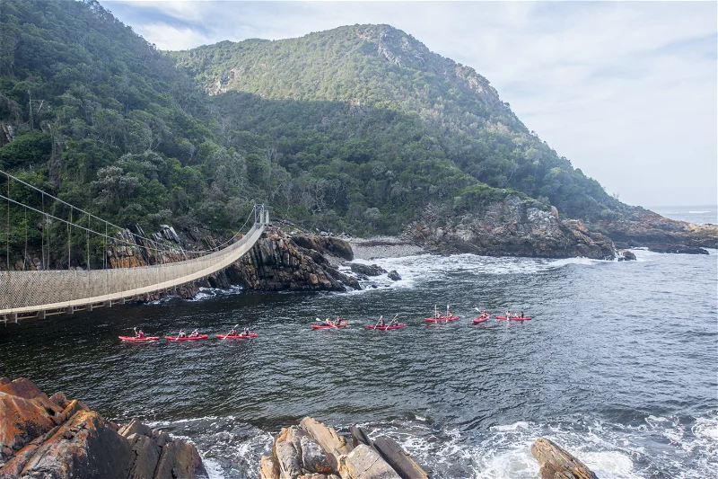

The Tsitsikamma National Park in South Africa is known for its iconic Suspension Footbridges. The footbridges can be found along the Garden Route and spans the mouth of the Storms River. It consist of 3 individual footbridges, with the longest one measuring at 77 meters long. No need for worry, for even though these are suspension bridges that sway, it is very much stable and secure.
© Afroventures
|

© Afroventures |

© Farirai | Gophari |